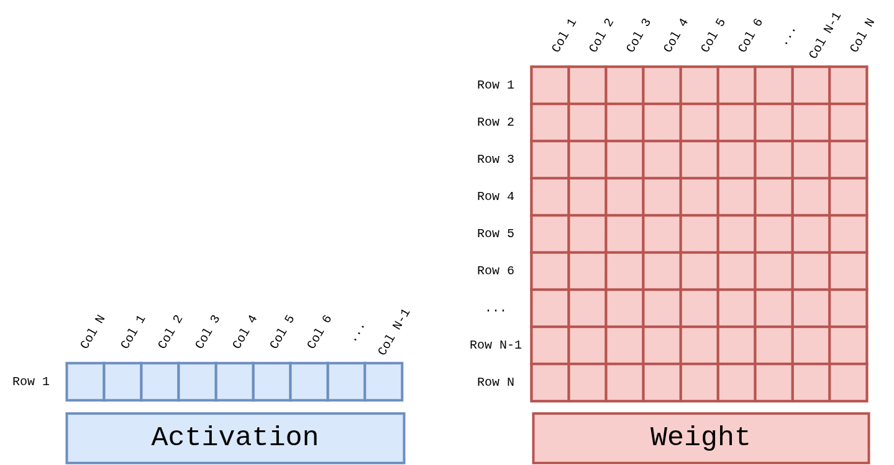
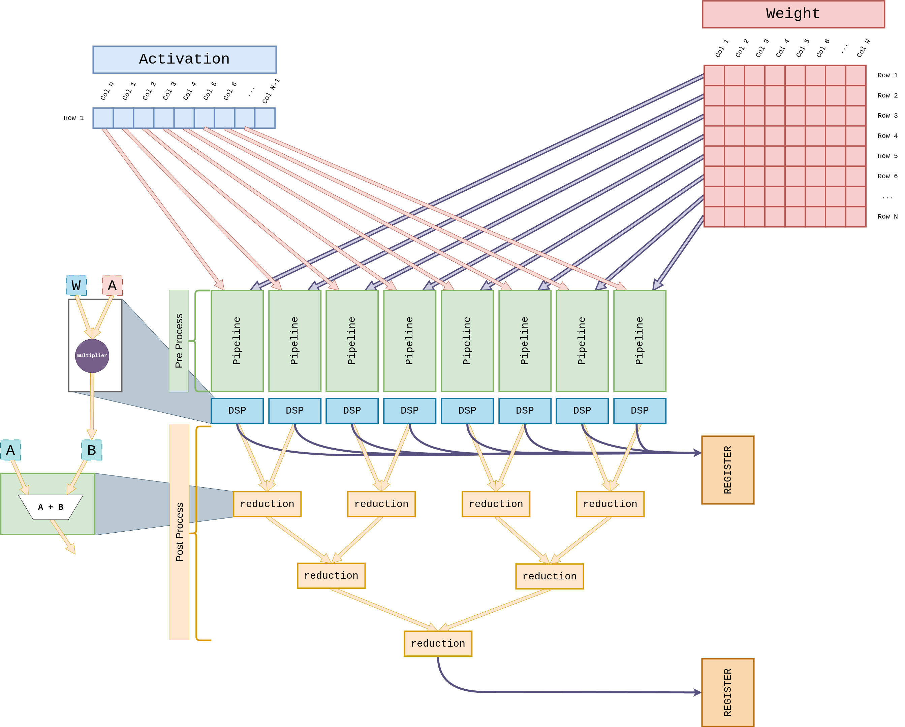

GEMV 코어#
GEMV 코어는 LLM 자기회귀 디코딩(Autoregressive Decoding) 단계의 지배적 연산인 행렬 × 벡터(``y = W x``) 를 담당합니다. 배치 1 · 시퀀스 1 의 디코딩에서는 전체 FLOPs 의 85 ~ 98 % 이상이 GEMV 이므로, GEMV 처리량이 초당 토큰 생성률(TPS) 에 직접 비례 합니다.
중요
2 차원 시스톨릭 어레이 하나만으로 디코딩을 수행하면 유효 가동률이
1 / 32 (= 단일 행만 활성) 까지 떨어집니다. pccx v002 는 이를 해결하기
위해 GEMV 전용 1D 벡터 코어 를 GEMM 과 병렬로 두고, 두 경로가 동일
L2 Cache 를 공유하는 이기종(heterogeneous) 구조를 채택했습니다.
1. 연산 대상#
GEMV 의 입력은 길이 N 의 액티베이션 벡터 와 N × N 크기의 가중치 행렬 입니다.
{kind=link}

Figure GEMV-Operands. Activation 은 1 × N 행 벡터, Weight 는
N × N 행렬이며 두 피연산자의 내적 결과가 새 길이 N 의 출력 벡터를
구성합니다. Attention 의 Q·Kᵀ, FFN 의 projection 에 모두 동일한
형태가 적용됩니다.#
2. 구성#
파라미터 |
값 |
|---|---|
코어 당 차원 |
32 (K) × 1 (M) |
코어 개수 |
4 (슬라이스당 4 개, 상·하 2 슬라이스 가능) |
파이프라인 폭 |
8 MAC (8 DSP48E2 레인) |
Reduction 트리 |
3 단계 (8 → 4 → 2 → 1) |
피크 처리량 |
32 MAC × 4 코어 × 400 MHz = 51.2 GMAC/s |
3. 코어 내부 구조#
{kind=link}

Figure GEMV-Core. Activation 1 행과 Weight 1 열을 Pre-Process 블록에서 dequantize 후, 8 개의 파이프라인 DSP 레인으로 분배합니다. 각 레인의 결과는 3 단계 reduction adder tree 를 거쳐 스칼라로 축약되며, Post-Process 블록에서 스케일·bias 를 적용한 뒤 REGISTER 에 기록됩니다.#
3.1 Weight Streaming#
디코딩 단계에서는 각 레이어 가중치가 매 토큰마다 한 번만 사용되어 재사용이 없습니다. 따라서 GEMV 는 GEMM 과 달리 Weight Streaming 전략을 적용합니다.
HP2/HP3 포트에서 가중치를 연속 스트리밍.
Weight Buffer 를 경유해 각 코어의 W-side Pre-Process 에 직접 주입.
가중치 재사용이 없으므로 버퍼는 순환 FIFO 형태로만 동작.
3.2 Activation 재사용#
액티베이션 벡터 x 는 L2 Cache 에 상주하며, 여러 GEMV 코어가 동일한 벡터를 브로드캐스트 해 소비합니다.
L2 → L1 Cache 로 액티베이션 타일 프리로드.
Pre-Process 블록이 INT8 → BF16 dequantize 와 scale 수행.
8 개의 MAC 유닛이
(W × A)를 병렬 실행.
3.3 Reduction Tree#
8 개 MAC 결과는 다음과 같이 3 단계로 축약되며, 각 단계마다 파이프라인 레지스터를 삽입해 타이밍을 확보합니다.
flowchart TB
M0([MAC₀]) --> R0a((+))
M1([MAC₁]) --> R0a
M2([MAC₂]) --> R0b((+))
M3([MAC₃]) --> R0b
M4([MAC₄]) --> R0c((+))
M5([MAC₅]) --> R0c
M6([MAC₆]) --> R0d((+))
M7([MAC₇]) --> R0d
R0a --> R1a((+))
R0b --> R1a
R0c --> R1b((+))
R0d --> R1b
R1a --> R2((+))
R1b --> R2
R2 --> OUT[/Scalar/]
구현은 v001 의 GEMV_reduction.sv 와 GEMV_reduction_branch.sv 를 계승.
3.4 누적 & 포스트프로세싱#
Reduction 결과는 Result Accumulator 에 저장되어, 다음 가중치 열과 순차적으로 합산되어 행 전체의 부분합을 완성합니다.
Post-Process 에서 weight-scale / activation-scale / bias 를 적용.
최종 INT8 재양자화 결과를 L2 Cache 또는 SFU 직결 FIFO 로 전송.
4. 병렬화 전략#
4 개의 GEMV 코어는 두 가지 병렬화 모드를 지원합니다. ISA 의
parallel_lane (5-bit) 필드로 활성 코어 수와 파티션 방향이 지정됩니다.
모드 |
설명 |
|---|---|
Row Parallelism |
출력 벡터의 서로 다른 행을 4 개 코어가 분할 계산. 가중치 행렬이 row 방향으로 스트라이프 됨. 액티베이션은 공유. |
Head Parallelism |
Multi-Head Attention 의 서로 다른 헤드를 4 개 코어가 독립 처리. 액티베이션(Q)·가중치가 헤드 축으로 분할됨. |
5. 내장 Lookup Table#
GEMV 코어 내부에는 W4 dequantize 전용 16 엔트리 LUT 가 내장됩니다.
GEMV_generate_lut.sv(v001) 재사용.4-bit 가중치 → BF16 실수 값의 직접 조회.
스케일 계수는 Constant Cache 에서 인덱싱.
6. Softmax / Normalize 와의 연동#
GEMV 출력은 주로 아래 두 패턴으로 소비됩니다.
Attention:
Q·Kᵀ→CVO_EXP/REDUCE_SUM(SFU) →V·softmax(다시 GEMV)FFN Projection: GEMV →
CVO_GELU/CVO_SCALE(SFU) → 다음 GEMV
GEMV ↔ SFU 경로는 L2 Cache 를 경유하지 않고 직결 FIFO 로 연결되어 왕복 레이턴시를 제거합니다. 자세한 내용은 SFU 코어 (Complex Vector Operations) 를 참조하세요.